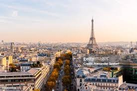

About Paris
Paris, France's capital, is a major European city and a global center for art, fashion, gastronomy, and culture. Its 19th-century cityscape is crisscrossed by wide boulevards and the River Seine. Notable for its museums and architectural landmarks: the Louvre was the most visited art museum in the world last year, the Musée d’Orsay is noted for its impressionist masterpieces, and accessibility is a priority throughout the city.